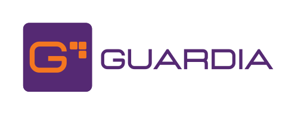

A Guardia é a primeira plataforma de Contabilidade Agêntica do Brasil. A marca traduz essa promessa em forma, cor e palavra: precisão técnica com proximidade humana, sofisticação operacional sem rigidez. Esta página sintetiza o que a marca é — personalidade, voz, pilares visuais e tagline. Para aplicação (paleta, tipografia, logos, ícones), use as páginas específicas do DS.
Para empreendedores. Informação confiável no momento da decisão.
Para contadores. Liberação da rotina para atuar como conselheiros.
Para o mercado. Contabilidade como inteligência, não obrigação acessória.
G geométrico em quadrado violeta, com corte horizontal interno. Forma fechada = proteção e custódia; corte interno = leitura aberta. Proteção com transparência.

Referência à peça L do Tetris ("Orange Ricky") com o quarto bloco propositalmente removido — o que sobra vira ponta de flecha, indicando direção e avanço.
Violeta como base de autoridade, laranja como acento de energia. Completados por amarelo, rosa e cinza báltico na paleta base de cinco cores.
Os três pilares operam juntos. Nenhum deles é suficiente sozinho; a identidade emerge da coexistência.
Autoridade técnica sem rigidez.
Clientes como parceiros.
Clareza, dados e calor humano.
Visão grande com execução real.
O trabalho do agente fica legível; o impacto do trabalho fica celebrado.
Fala o que é. Sem rodeios, sem eufemismos. Nomeia o problema e a solução.
Toda palavra puxa uma decisão. Nada de informação decorativa.
Constrói em positivo. Fala do que se conquista, não do que se perde.
Leitura em fluxo único. Frase curta. Jargão só quando agrega precisão.
| Evitar | Motivo | |
|---|---|---|
| × | "Substituir contadores" | A Guardia amplia o contador, não o elimina. |
| × | "Contabilidade automática" | Reduz a tese a uma commodity operacional. |
| × | "Software de contabilidade" | A Guardia é infraestrutura de inteligência, não ferramenta. |
| × | "Mais rápido que o concorrente" | Velocidade sem qualidade de decisão não diferencia. |
| × | "Inovação pela inovação" | Ancorar em tempo, clareza e resultado. |
Esta página é o resumo executivo da marca. Para a aplicação visual concreta, consulte as páginas específicas do DS. Para o documento completo no Notion, use os links abaixo.